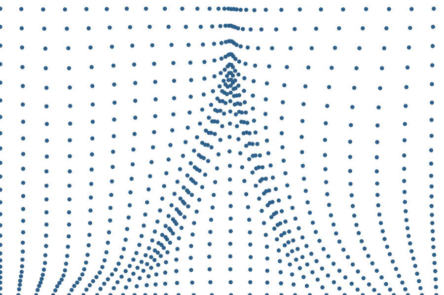

FT-PINN: feature tracking in physics-informed neural networks
PINNs struggle with localized features such as thin boundary layers and shocks: the loss is dominated by the smooth bulk, so steep gradients are under-resolved. FT-PINN puts the network on a fixed reference domain and composes it with a trainable coordinate map, optimized jointly with the network weights. Collocation points then concentrate where the solution is steep, with no resampling and no prior knowledge of where the feature is.
- Part I: analytical tensor-product manifolds for boundary layers (advection–diffusion at Pe = 10³, flat plate at Re = 10⁶).
- Part II: RBF deformation manifolds for shocks (Burgers merging and decelerating shocks, Sod shock tube, Euler regular reflection).